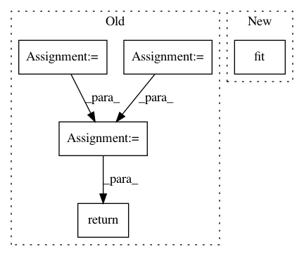

cb347641837feb9f651038c2f88317563a347627,libact/models/svm.py,SVM,train,#SVM#Any#,65
Before Change
def train(self, dataset, *args, **kwargs):
X, y = zip(*dataset.get_labeled_entries())
prob = svmutil.svm_problem(y, [x.tolist() for x in X])
self.m = svmutil.svm_train(prob, self.param)
return self.m
def predict(self, feature, *args, **kwargs):
if self.m == None:
raise RuntimeError("Model not trained")
After Change
self.model = sklearn.svm.SVC(*args, **kwargs)
def train(self, dataset, *args, **kwargs):
return self.model.fit(*(dataset.format_sklearn() + args), **kwargs)
def predict(self, feature, *args, **kwargs):
return self.model.predict(feature, *args, **kwargs)
In pattern: SUPERPATTERN
Frequency: 3
Non-data size: 5
Instances
Project Name: ntucllab/libact
Commit Name: cb347641837feb9f651038c2f88317563a347627
Time: 2015-12-17
Author: yangarbiter@gmail.com
File Name: libact/models/svm.py
Class Name: SVM
Method Name: train
Project Name: EpistasisLab/tpot
Commit Name: d4ec1aa059bb00dd57fc3ddd81dc8b4fb8a7497a
Time: 2016-08-19
Author: rso@randalolson.com
File Name: tpot/tpot.py
Class Name: TPOT
Method Name: predict
Project Name: jeongyoonlee/Kaggler
Commit Name: 660d487863cec6e26cdb0184f63a189297577546
Time: 2015-10-11
Author: jeong.@conversionlogic.com
File Name: kaggler/preprocessing/data.py
Class Name: OneHotEncoder
Method Name: fit_transform